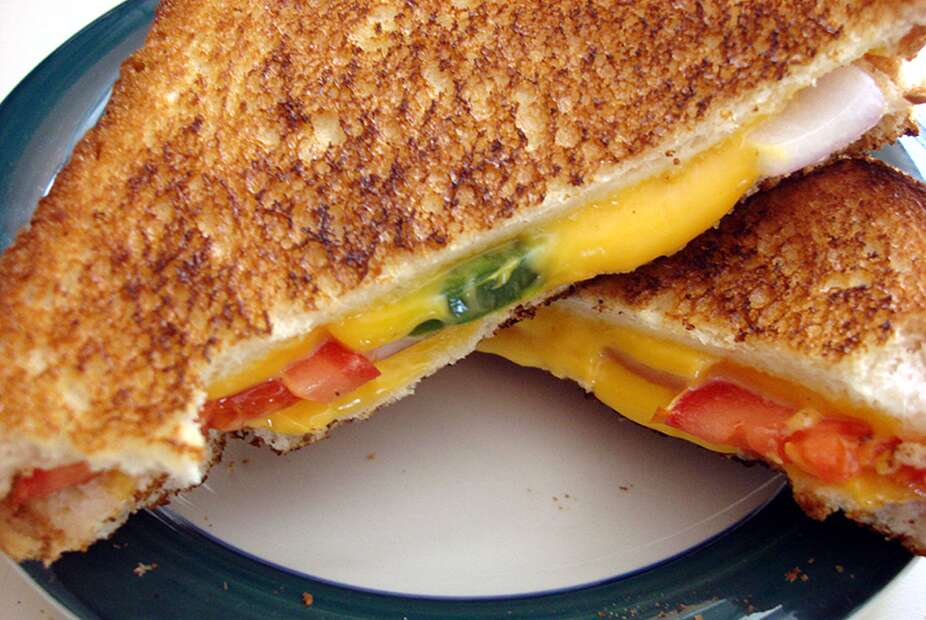

Spicy Grilled Cheese Sandwich

Who doesn't love a culinary classic with a little bit of spice?? This recipe is a quick one that only takes 5 minutes and will leave you thinking about seconds.
Ingredients
- 2 tablespoons butter or margarine
- 4 slices white break
- 2 slices American Cheese
- 1 roma (plum) tomato, thinly sliced
- 1/4 small onion, chopped
- 1 jalapeno pepper, chopped
Steps
- Heat a large skillet over low heat.
- Spread butter or margarine onto one side of two slices of bread.
- Place both pieces of buttered side down on the skillet.
- Lay a slice of cheese on each one, and top with slices of tomato, onion and jalapeno.
- Butter one side of the ramining slices of bread, and place on top buttered side up.
- When the bottom of the sandwhiches are toasted, flip and fry until brown on the other side.